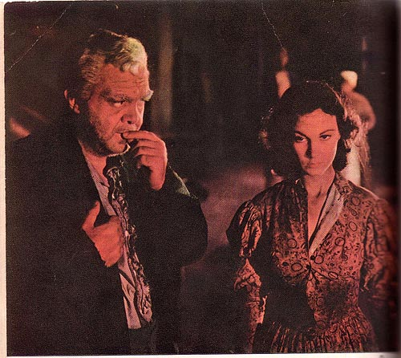

Illustration for
Gone with the Wind: Motion Picture Edition
(New York: The Macmillan Company, 1940)
CAPTION
: "Oh, can Pa have lost his mind?" thought Scarlett. "No, no. He's just dazed by it all. He'll get over it. (See page 159)"